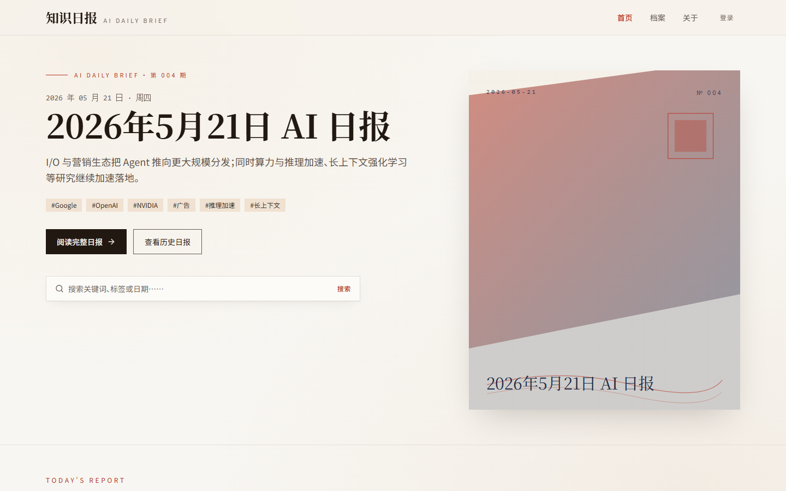

Selected Work
代表作品
两项旗舰项目特写，七项延伸探索。内容已做公开展示处理。
AI 日报
自动化系统
基于 Codex 定时任务，每天 9:00 自动搜集 AI 资讯、结构化整理后发布到日报网站，并将结果推送至 Gmail 邮箱。
- Trigger
- Codex 定时任务
- Pipeline
- 搜索 → 整理 → 发布
- Output
- 网站 + Gmail 双路
- Status
- 每日自动运行中

版本化知识库与 AI 复核闭环
将 Excel 维护的规则知识资产转化为具备版本追踪、AI 建议与人工审核链路的结构化流程。
人审信息平台加速
用 Codex 联网搜索能力辅助项目类型快速分类，加快人工审核前的信息预处理速度。
药品知识库构建
通过 Codex 联网搜索批量收集药品说明书关键字段，结构化提取后助力构建药品规则底座。
疾病推断规则 AI 复核
使用 Codex 联网搜索对历史疾病推断规则进行准确性核查，识别过时或存疑规则并推动更新。
Word 文档格式规范化
利用 Codex 文件处理能力批量统一 Word 文档格式规范，减少重复排版与人工校对工作。
交互式 SQL 指标练习器
无需后端，在浏览器中运行真实 SQL 查询，围绕互联网常用业务指标设计可操作练习场景。
n8n 工作流探索
排查 n8n 接入 DeepSeek 时的网络、节点配置与数据存储问题，将流程恢复到可稳定执行状态。
Automation Showcase
AI 日报自动化工具链
一条从定时触发到网站同步与邮件送达的自动化流水线。
Codex 定时任务
每日 09:00 自动触发，无需人工操作
联网搜索
收集当日 AI 领域关键动态
AI 整理生成
结构化处理，输出标准日报格式
多路输出
Gmail 邮件推送 + 网站 Webhook 发布
同步结果
记录发布状态，返回访问链接
Stack — Codex Automation · Website Webhook · Gmail
Prompt Engineering
Prompt 工程实践
不同业务场景下的结构化 Prompt 设计，展示角色设定、输出约束与人机协同的方法。
Prompt 01
AI 资讯日报收集
应用于 Codex 定时任务，每日 9:00 自动执行
Prompt 02
药品说明书结构化提取
用于批量构建药品知识库规则底座
Prompt 03
项目类型分类辅助
用于人审信息平台的前置分类加速
AI 不是效果展示的捷径。How I Work — Yilin
我关注的是：输出能被理解、被复核、被指标验证。
Hackathon / Eazo
黑客松应用开发
参加 Eazo 黑客松期间，快速从想法到上线发布的两款 AI 应用。
App 01Eazo
冰箱管家
AI 驱动的食材管理应用，帮助用户追踪冰箱库存、发出临期提醒并推荐菜谱，减少食物浪费。
从想法到上线，在黑客松期间完成完整产品周期，已发布于 Eazo 平台。
App 02Eazo
看房记录本
AI 辅助的看房工具，帮助用户结构化记录每套房源信息，智能整理并对比购房决策要素。
解决看房信息零散记录的真实痛点，已发布于 Eazo 平台。
About — Colophon
Yilin
一名 AI 应用实践者，专注于将 AI 工具落地到真实工作流程中，追求可验证、可迭代的结果。
当前探索聚焦于：Codex 自动化工作流、RAG 系统与知识图谱、Prompt 工程设计、保险风控知识管理与 SQL 数据分析。同时参与 Eazo 黑客松，探索 AI 在日常生活场景中的应用。网站展示内容已做脱敏处理，不涉及敏感业务数据。
Correspondence
一起聊聊 AI
如何解决实际问题
欢迎交流 AI 应用落地、RAG 系统、Prompt 工程或自动化工作流话题。
发邮件联系 →